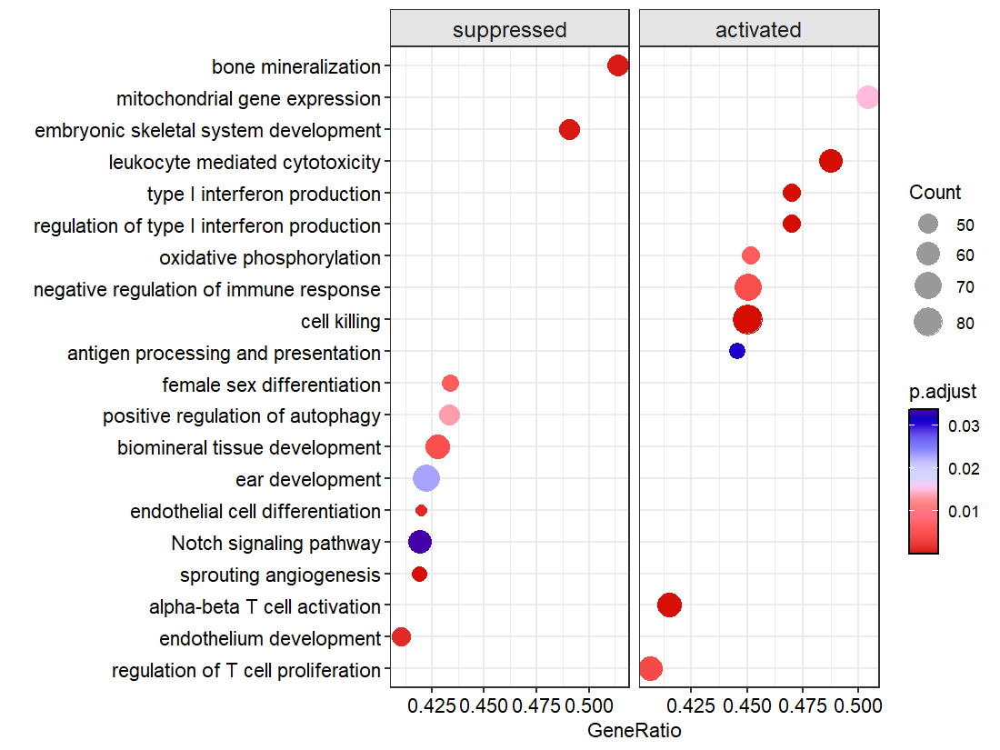
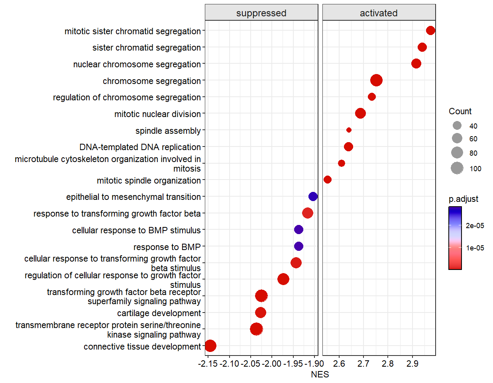
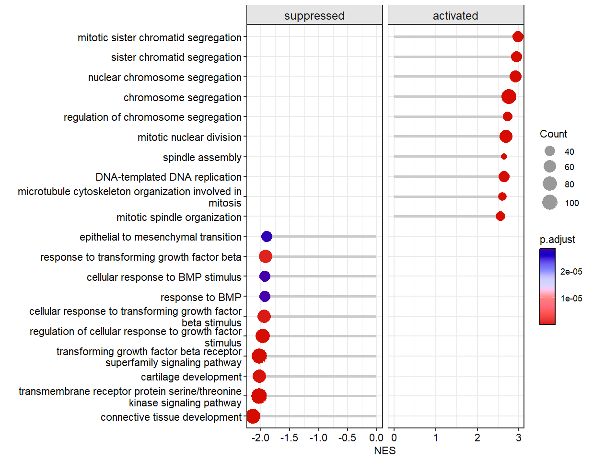
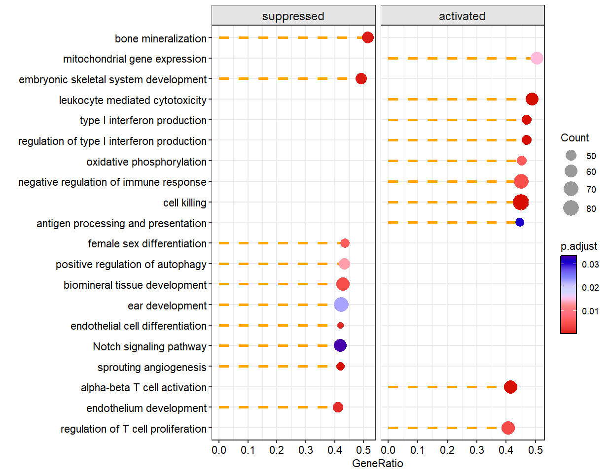
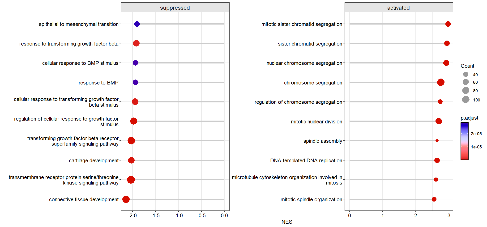
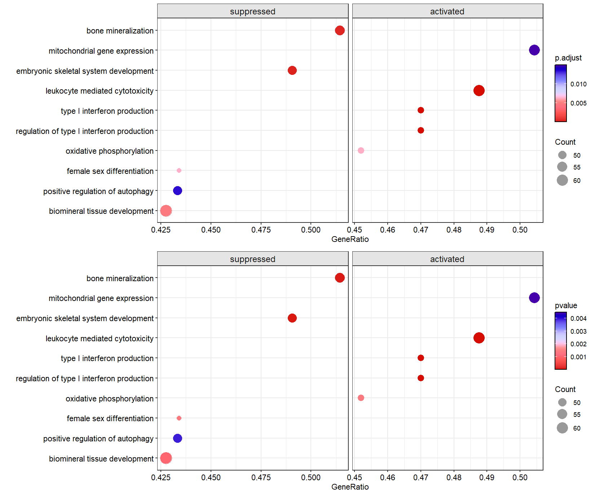

Chapter 3 dotplotGsea
dotplotGsea can be used to show GSEA results with a scatter plot.
Get a enriched object:
library(clusterProfiler)
library(org.Hs.eg.db)
# loda genelist
data(geneList, package="DOSE")
# enrichment
ego3 <- gseGO(geneList = geneList,
OrgDb = org.Hs.eg.db,
ont = "BP",
minGSSize = 100,
maxGSSize = 500,
pvalueCutoff = 0.05,
verbose = FALSE)Show the top 10 terms:
# default plot
dotplotGsea(data = ego3,topn = 10)
# $df
# # A tibble: 20 × 14
# # Groups: type [2]
# ID Description setSize enrichmentScore NES pvalue p.adjust qvalue rank leading_edge
# <chr> <fct> <int> <dbl> <dbl> <dbl> <dbl> <dbl> <dbl> <chr>
# 1 GO:0042129 regulation o… 150 0.358 1.54 8.43e-4 4.21e-3 2.22e-3 2741 tags=41%, l…
# 2 GO:0003158 endothelium … 117 -0.452 -1.73 2.12e-4 1.37e-3 7.25e-4 2839 tags=41%, l…
# 3 GO:0046631 alpha-beta T… 147 0.426 1.83 1.09e-5 1.09e-4 5.74e-5 2570 tags=41%, l…
# 4 GO:0002040 sprouting an… 105 -0.499 -1.89 6.61e-6 6.91e-5 3.65e-5 2696 tags=42%, l…
# 5 GO:0007219 Notch signal… 143 -0.352 -1.40 1.24e-2 3.34e-2 1.77e-2 3914 tags=42%, l…
# 6 GO:0045446 endothelial … 100 -0.479 -1.80 1.65e-4 1.10e-3 5.78e-4 2839 tags=42%, l…
# 7 GO:0043583 ear developm… 168 -0.354 -1.43 7.54e-3 2.29e-2 1.21e-2 3373 tags=42%, l…
# 8 GO:0031214 biomineral t… 145 -0.395 -1.57 1.00e-3 4.80e-3 2.53e-3 2101 tags=43%, l…
# 9 GO:0010508 positive reg… 120 -0.404 -1.56 3.94e-3 1.34e-2 7.08e-3 3747 tags=43%, l…
# 10 GO:0046660 female sex d… 106 -0.427 -1.62 1.43e-3 6.36e-3 3.36e-3 3148 tags=43%, l…
# 11 GO:0019882 antigen proc… 101 0.356 1.43 1.12e-2 3.09e-2 1.63e-2 3147 tags=45%, l…
# 12 GO:0001906 cell killing 180 0.464 2.05 1.31e-8 3.08e-7 1.63e-7 2616 tags=45%, l…
# 13 GO:0050777 negative reg… 162 0.349 1.53 9.28e-4 4.59e-3 2.42e-3 3282 tags=45%, l…
# 14 GO:0006119 oxidative ph… 104 0.394 1.59 1.42e-3 6.34e-3 3.35e-3 3703 tags=45%, l…
# 15 GO:0032479 regulation o… 100 0.493 1.97 1.54e-6 1.94e-5 1.02e-5 2932 tags=47%, l…
# 16 GO:0032606 type I inter… 100 0.493 1.97 1.54e-6 1.94e-5 1.02e-5 2932 tags=47%, l…
# 17 GO:0001909 leukocyte me… 121 0.475 1.97 1.34e-6 1.75e-5 9.23e-6 2746 tags=49%, l…
# 18 GO:0048706 embryonic sk… 106 -0.483 -1.83 5.13e-5 4.04e-4 2.13e-4 2919 tags=49%, l…
# 19 GO:0140053 mitochondria… 115 0.361 1.49 4.44e-3 1.49e-2 7.85e-3 4006 tags=50%, l…
# 20 GO:0030282 bone mineral… 105 -0.469 -1.78 6.46e-5 4.84e-4 2.56e-4 3348 tags=51%, l…
# # ℹ 4 more variables: core_enrichment <chr>, type <fct>, Count <int>, GeneRatio <dbl>
#
# $plot
Use NES as the X axis:

Make lollipop plot:

Add dash line:
# change line style
dotplotGsea(data = ego3,topn = 10,
add.seg = T,
line.col = 'orange',
line.type = 'dashed')
Free scale for each sub plot:

Control the pvalue and p.adjusted value cutoff:
p1 <- dotplotGsea(data = ego3,topn = 5,
pajust = 0.1)$plot
p2 <- dotplotGsea(data = ego3,topn = 5,
pval = 0.05)$plot
# combine
cowplot::plot_grid(p1,p2,nrow = 2,align = 'hv')